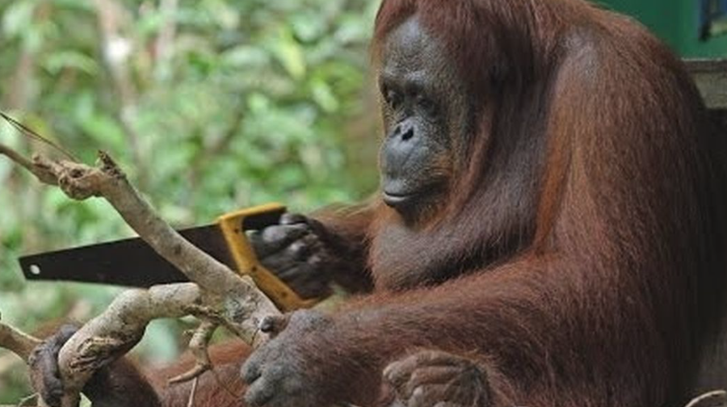
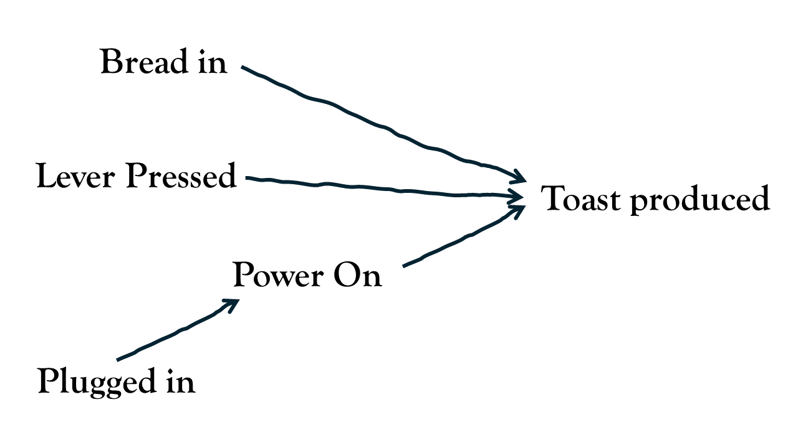
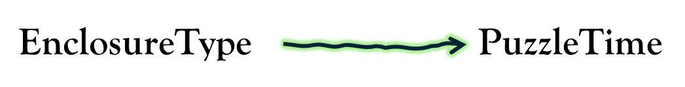
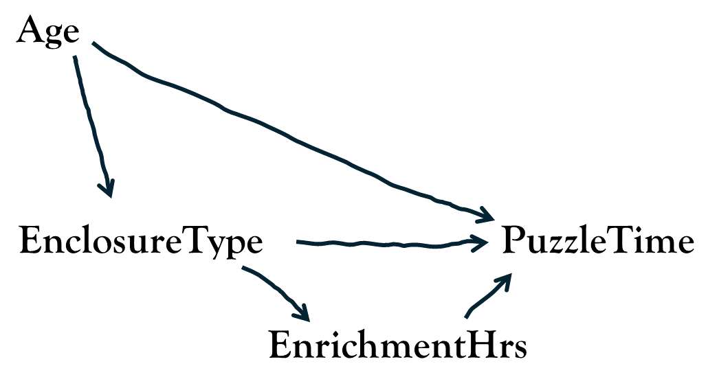
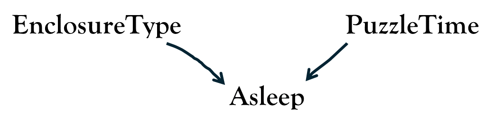
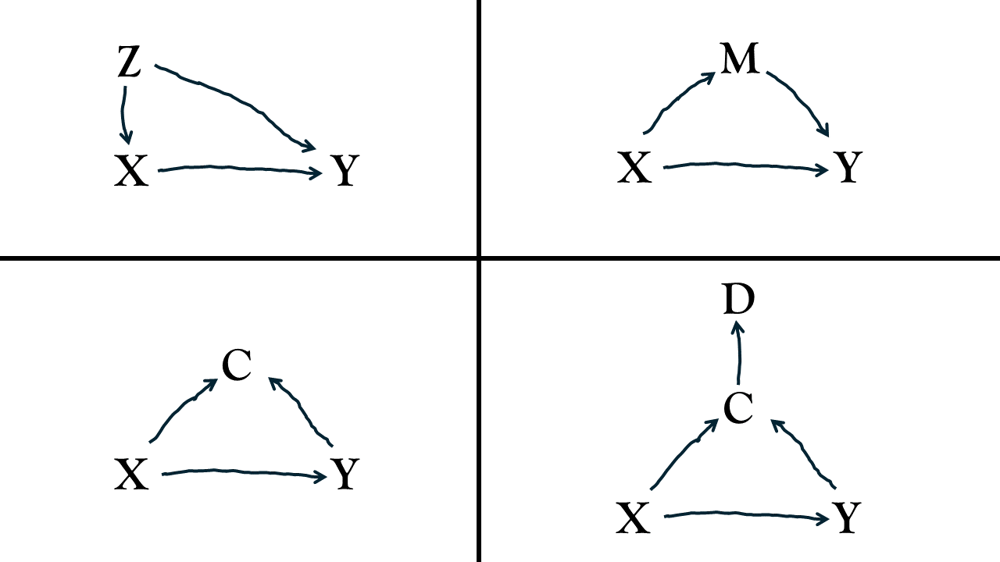
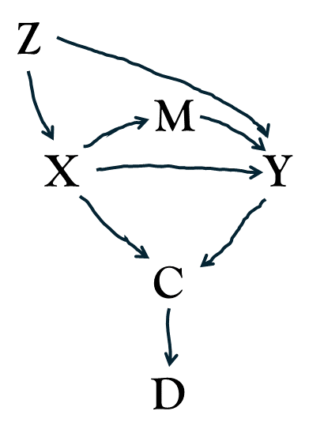
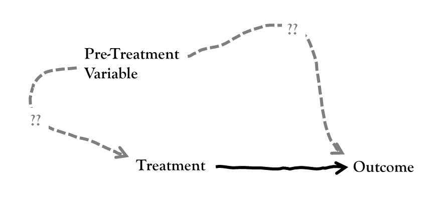
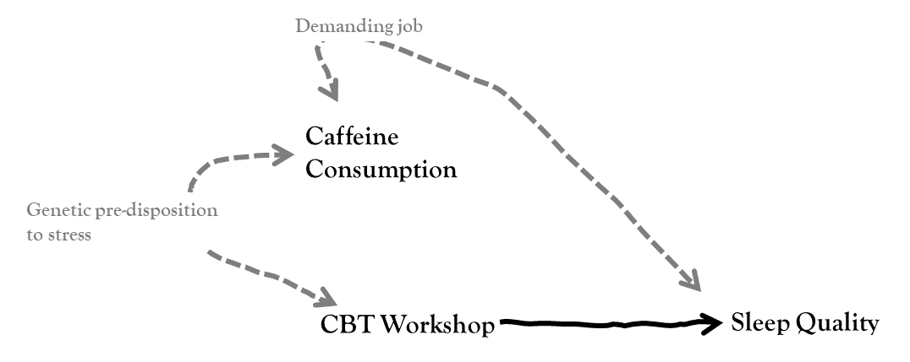

Hitchhiker’s guide to building statistical models
Want to run and tweak code directly in this reading?
Check out the interactive version
Over the past 10 weeks, we have done a lot of work learning about the machinery of statistical models. But learning how different tools work is not the same as learning how to use them to build something.
One of the biggest challenges in doing scientific research is to thinking very carefully, deliberately, and clearly about all parts of the process. It is all too easy to go through the motions and do what looks like science, but only ever have a research question that is ill-defined and ambiguous. No amount of fancy statistics can provide a clear answer to an under-specified question.
The Ultimate Question
“I checked it very thoroughly,” said the computer, “and that quite definitely is the answer. I think the problem, to be quite honest with you, is that you’ve never actually known what the question is.”
The Hitchhikers Guide to the Galaxy, Douglas Adams.
At a big picture level, research goals typically fall into one of three categories:
| Aim | |
|---|---|
| descriptive | summarise characteristics |
| predictive | forecast the future for use in screening/selection/monitoring |
| explanatory | identify if one thing causes another or understand the mechanism by which it happens |
A large amount of psychological research falls into the “explanatory” category, aiming to understand if some variable X influences another variable Y, or by how much, or if the influence differs across another variable Z. We have been using statistical associations to provide us with answers to such questions, while at the same time endlessly hammering the phrase “correlation does not imply causation”. It is a valid statement, but it is not very useful: if our aim is to understand the world and how it works, we cannot shy away from thinking about causality when defining our research questions. It is true that statistical analyses can only ever provide us with associations, but depending on what variables we measure and how we build our models, there are countless different ‘associations’ that we could report. It is crucial that we do not lose sight of our target, which is so often causal in nature.
Research questions in the social sciences will very often use language that is implicitly causal. A frequent trap that researchers fall into is to have such a question, but then fail to engage with the assumptions that underpin whether their analysis is actually able to address that question. Words such as “effect”, “influence”, “explain”, “prevent”, “improve”, “protect” etc., are all terms that imply causation, asking a question about what would happen to a variable \(Y\) in the event that variable \(X\) changed. Without careful thought (about both design and analysis) a statistical association might not tell us anything about the specific question that we are actually interested in.
Important Note: we’re not going to learn anything in this reading that magically allows us to interpret our estimates as ‘causal’. No such thing exists.
Consider this reading more as a gentle encouragement to think more carefully about which association it is that you actually want to report.
“causality is not extra‐statistical but instead is a logical antecedent of real‐world inferences” (Greenland, 2022, p. 3).
To build the intuition of how we can improve our research questions, let’s move to an example.
Suppose that we are in the realms of primate behaviour, and we are interested in social settings and engagement with cognitive puzzles - i.e., how long they spend working through sets of puzzles until they get bored/give up.
- Research Question: Do chimpanzees in group-housing enclosures (with >2 chimps) engage with puzzles for longer than chimpanzees in paired-housing enclosures (2 chimps)?
Take a few minutes to reflect on whether the above research question is clear and specific. What exactly is it asking? Is it descriptive? predictive? explanatory?
As it currently reads, this may feel like it is fairly clear, but it is actually quite under-specified. As well as not being clear about whether our question is about all chimpanzees, just adults, or just those in zoos, the question does not explicitly differentiate between whether we are interested in:
- a descriptive question, targeting the observed difference in ‘time-engaged-with-puzzles’ between chimpanzees currently in group-enclosures and those currently in paired-enclosures?
- an explanatory question, targeting the difference in puzzle engagement for a given chimpanzee in group-enclosure compared to how long that same chimpanzee would spend with puzzles if it lived in a paired-enclosure?”
How to specify clear research questions
A clearly defined research question should have two things, that can be defined outside of any statistical model:
- a unit-specific quantity
- this is the thing we want to know about, defined at the level of the unit of interest. It could be a single value \(Y_i\) for a given unit \(i\), or a counterfactual comparison of \(Y_i\) under different levels of another variable1 \(X\), which we could be write as, e.g.,: \(Y_i^{X=1} - Y_i^{X=0}\)
- a target population
- this is the set of units over which we are aggregating our quantity.
Returning to our chimp example, we can move to a somewhat more clearly stated question:
- Research Question: For adult chimpanzees housed in UK zoos, what is the average effect on time-spent engaging with puzzles due to being placed in group-housing enclosure (>2 chimps) compared to being placed in paired-housing enclosure (2 chimps)?
Note that the word “effect” here is stating that we want to know how much of the chimpanzee \(i\)’s “puzzle-time” is because they are in a group-enclosure. This is a causal question, and as such concerns what we would expect chimp \(i\)’s “puzzle-time” to be like in the counterfactual world where we observed them in the other type of enclosure. The unit-specific quantity that we are interested in here is \(\text{PuzzleTime}_i^{(\text{Enclosure = Group})} - \text{PuzzleTime}_i^{(\text{Enclosure = Paired})}\), and these correspond to the values that are in the diff column in Table 1. And we we are going to want the average of these across a sample that represents the target population (adult chimps in UK zoos).
| chimp | puzzlet_paired | puzzlet_group | diff |
|---|---|---|---|
| chimp-a | 23 | 27 | 4 |
| chimp-b | 30 | 33 | 3 |
| chimp-c | 35 | 36 | 1 |
| chimp-d | 24 | 27 | 3 |
| ... | ... | ... | ... |
| ... | ... | ... | ... |
| chimp-w | 19 | 21 | 2 |
| chimp-x | 24 | 27 | 3 |
| chimp-y | 17 | 22 | 5 |
| chimp-z | 21 | 23 | 2 |
Mapping out the universe
Now that we have a well defined research question, there are lots of ways we might design a study to address it. We’ll assume that we are measuring “puzzle-time” the same way in all of these - by giving each chimpanzee an hour to work through a series of puzzles, and seeing how long they engage with the puzzles before they give up/get bored/wander off.
There are different ways we could study chimpanzees from both paired- and group-enclosures doing these puzzles.
Here are three possibilities:
1. observational study
Randomly sample chimpanzees living in both types of enclosure, and administer our puzzle-series task to all of them, also recording other variables required to identify the quantity of interest.
2. between-chimp randomized experiment
Randomly allocate half of chimpanzees into group-enclosures, and half into paired-enclosures, and (after a period of time that we would expect any effect to have taken place), administer our puzzle task.
3. within-chimp randomized experiment
Place each chimpanzee in both types of enclosure (counterbalancing the order in which these occur for each chimp), and then administer our puzzle task.
We will not cover option 3 right now - this design involves multiple measurements of the puzzle task for each chimpanzee, and we will consider statistical models for this sort of design in MSMR. Here, we will focus on options 1 and 2, to illustrate how our understanding of the how the data has come about informs the statistics we will use to address our research question. This includes understanding the bit about “other variables required to identify the quantity of interest”.
In our options for desiging a study of chimp-puzzling, in both the scenarios 1 and 2 detailed above, we only ever observe a given chimpanzee in one type of enclosure. This means that (in these designs) we can never observe the values in both of the puzzlet_paired and puzzlet_group columns for the same chimp - we can never directly observe the effect of enclosure type on puzzle-engagement-time for any given chimpanzee:
| chimp | puzzlet_paired | puzzlet_group | diff |
Observed Data
|
|
|---|---|---|---|---|---|
| enclosure_type | PUZZLET | ||||
| chimp-a | 23 | 27 | 4 | Paired | 23 |
| chimp-b | 30 | 33 | 3 | Paired | 30 |
| chimp-c | 35 | 36 | 1 | Paired | 35 |
| chimp-d | 24 | 27 | 3 | Paired | 24 |
| ... | ... | ... | ... | ... | ... |
| ... | ... | ... | ... | ... | ... |
| chimp-w | 19 | 21 | 2 | Group | 21 |
| chimp-x | 24 | 27 | 3 | Group | 27 |
| chimp-y | 17 | 22 | 5 | Group | 22 |
| chimp-z | 21 | 23 | 2 | Group | 23 |
Our understanding of the study design (our theory about the ‘data generating process’) is absolutely crucial in informing how we use our observed data to assess the research question appropriately. Knowing how chimps were allocated to the different types of enclosure will be necessary to determine what to put in our model.
To build the intuition, we are going to look at some diagrams. These diagrams represent our understanding of how the various attributes influence one another in the real world to generate the data that we have - they are visualisations of data generating processes!
“Data Generating Process”
A data generating process (DGP) is a process in the real world that “generates” the data we are interested in. Or, more broadly “how the data have come to be the way they are”. We don’t know the true DGP, but we usually have some understanding to allow us to have a rough idea of it.
It may be easier to think of a DGP first in a closed system: imagine we’re thinking about whether a toaster produces some toast, and we try making toast a few times, changing a few key variables (whether it’s plugged in, whether I put the bread in, etc.)
attempt_nr bread lever_pressed plugged_in power_on toast
1 1 1 1 1 1 1
2 2 1 0 1 1 0
3 3 1 1 0 0 0
4 4 0 0 0 0 0
5 ... ... ... ... ... ...Several things need to happen in order for me to get my toast. We can draw a picture of how we understand the process to work:

This diagram can serve as a way of communicating our theory about the **data generating process*. We are saying that getting toast depends on: whether there is bread; whether the lever is pressed; and whether there is power to the toaster. In turn, power to the toaster depends on whether I plugged it in!
In diagrams like these, the words indicate variables - quantifiable attributes in the real-world. The arrows represent how these different real-world attributes relate to one another to produce an outcome (toast).
In our chimpanzee studies, if we think about out research question in isolation, we can draw it as an arrow going from EnclosureType to PuzzleTime.

The EnclosureType variable here is our “independent variable” or “focal predictor”, and we are asking about what effect changing this has on the PuzzleTime variable (the “outcome” or “response”). Sometimes the predictor here might be referred to as the “treatment” or “exposure”. This language comes from the idea of investigating the effect of a given drug on some outcome. People are either in a “treated group” (they take the drug), or the “control group” (they don’t take the drug), and we measure the outcome (e.g., cholesterol) for both groups.
In the real world, there are lots of other things that affect PuzzleTime - there are lots and lots of things that might influence why a chimpanzee might spend more time engaging with puzzles: its age, sex, genetics, hunger, social status, rearing history, hormones etc., etc. To simplify our explanations, for now, let’s just consider only one of these things - age - and suppose that older chimpanzees are less curious (and spend less time with puzzles) than younger ones.
How age relates to the other variables in our diagram depends on how the study is designed, as well as what we theorise about the world.
Confounders
For instance, let’s suppose that we have good reason to suspect that if we let zookeepers act as normal, they would tend to place younger chimpanzees in paired-enclosures, and older ones in group-enclosures.
Let’s consider how this would then fit with our understanding of our two studies:
1. observational study
If our study was simply observing chimpanzees in whatever type of enclosure that we find them in, then we need to understand how that allocation happened. If zoos tend to place younger chimpanzees in paired-enclosures, then we would draw a line from Age to EnclosureType.

2. randomised experiment
If our study is instead a randomised experiment, then in our diagram, we know that there is no arrow going from Age to EnclosureType. In fact, we know that there should be no arrows going into EnclosureType, because it’s just been randomly allocated!

In the observational study, because zoos are tending to place younger chimpanzees in paired-enclosures, then our data will likely reflect this: the chimps we observe from paired-enclosures might show greater time spent with puzzles than those we observe from group-enclosures because they tend to be younger.
If we fail to take into account the age differences, it is impossible to isolate the effect of enclosure type on puzzle-time - it would be ‘confounded’ by age. By contrast, in our randomised experiment, because the only thing influencing which enclosure a chimp is allocated to is the random flip of a coin, it means that we should end up with similar aged chimps in each type.
To illustrate how this understanding of the data generating process changes how we should build our models, we have simulated data for the two scenarios above so that you can play around with it yourself. In both the cases, we have made it so that being in a group-enclosure makes every individual chimpanzee spend on average exactly 3 minutes more engaging with the puzzles than they would be in a paired-enclosure.
- In https://uoepsy.github.io/data/chimp_obs.csv we have an observational study where the allocation of chimps into paired/group-enclosures is dependent on age: zookeepers tended to put younger chimpanzees in paired-enclosures.
- In https://uoepsy.github.io/data/chimp_rct.csv, we have a experiment in which chimpanzees are randomly allocated into either paired or group enclosures.
In both cases, we have the chimpanzee’s ages as a third variable. The question arises of whether to include age in our model. Let’s compare the models with and without age in both scenarios. We are interested, remember, in “the effect of enclosure type on puzzle-time”, which in this case corresponds to the enclosure_type coefficient (the difference in time spent on puzzles in "Paired" vs "Group" enclosures). Remember that in both scenarios, we have made it so that this difference is 3 ("Group" vs "Paired") for every chimp.
1. observational study
chimp_obs <- read.csv("https://uoepsy.github.io/data/hhgbm_chimp_obs.csv") |>
mutate(
enclosure_type = factor(enclosure_type,
levels=c("Paired","Group"))
)
m1 <- lm(PUZZLET ~ enclosure_type, chimp_obs)
m2 <- lm(PUZZLET ~ age + enclosure_type, chimp_obs)| (1) | (2) | |
|---|---|---|
| (Intercept) | 34.0 [32.9, 35.2]*** | 41.0 [37.0, 45.0]*** |
| enclosure_typeGroup | 0.1 [-1.3, 1.5] | 3.0 [1.0, 5.0]** |
| age | -0.4 [-0.6, -0.2]** | |
| R2 | 0.001 | 0.376 |
2. randomized experiment
chimp_rct <- read.csv("https://uoepsy.github.io/data/hhgbm_chimp_rct.csv") |>
mutate(
enclosure_type = factor(enclosure_type,
levels=c("Paired","Group"))
)
mr1 <- lm(PUZZLET ~ enclosure_type, chimp_rct)
mr2 <- lm(PUZZLET ~ age + enclosure_type, chimp_rct)| (1) | (2) | |
|---|---|---|
| (Intercept) | 32.4 [30.7, 34.1]*** | 41.0 [37.5, 44.5]*** |
| enclosure_typeGroup | 3.0 [0.6, 5.4]* | 3.0 [1.4, 4.6]*** |
| age | -0.4 [-0.6, -0.2]*** | |
| R2 | 0.222 | 0.659 |
Note that in the randomised experiment, age is a significant predictor, but including/excluding it does not change the estimate of the enclosure_type coefficient. In this toy example, the enclosure_type coefficient doesn’t change at all, whereas in a real randomised experiment it probably would change just a little bit (this is just because we’ve made it so that the randomisation has resulted in exactly the same ages of chimps in both types of enclosure — which is what randomisation achieves in the long-run).
What we are seeing is that including/excluding age in the model doesn’t bias our estimate of the enclosure_type coefficient. However, its inclusion will increase our precision (note the confidence interval gets narrower), because we are explaining more variance in our outcome variable (making the variance explained by enclosure easier to detect2).
Contrast this with the observational study, in which it is absolutely necessary to adjust for age in order to ‘de-confound’ the effect of enclosure on puzzle-time. If we fail to include age in our model then we might erroneously conclude that smaller enclosures lead to more aggression, rather than less! This makes sense when we think about the model lm(PUZZLET ~ enclosure_type, chimp_obs): we are comparing PUZZLET in two sets of chimpanzees, indicated by whether they’re in paired or group enclosures. But the chimps in the group enclosures are, on average older than the chimps in the paired enclosures. The model comes out saying there is no difference in between the two sets, but this is actually because the differences in PUZZLET due to age are acting against any differences due to enclosure type.
Cautionoptional note for wizards: exchangeability of potential outcomes
It’s tempting to think that what we’re aiming for is having the same aged chimps in both types of enclosure - i.e., it feels like what we want is “balanced” covariates. Indeed, this is why people design studies that “match” subjects on things like age and sex - for instance, for each chimp observed in a paired enclosure, finding a chimp of the same age in a group enclosure. Technically however, this isn’t actually the thing we’re aiming for, it is simply one way to get it.
To identify the effect of enclosure_type on PUZZLET, what we are wanting is “exchangeability of the potential outcomes”.
The “potential outcomes” here are the values of PUZZLET we would have measured if we could see a chimp in either enclosure type.
In the situation of the observational study, the sets of potential outcomes (puzzlet_paired, puzzlet_group) are not comparable for the two groups of enclosure_type that we have observed (Table 3) — where enclosure_type=="Group", these values tend to be slightly lower than where enclosure_type=="Paired". This is because of age!
Unobservable
|
Observed Data
|
|||||
|---|---|---|---|---|---|---|
| chimp |
Potential Outcomes
|
Individual Effect
|
age | enclosure_type |
Realised Outcome
|
|
| puzzlet_paired | puzzlet_group | diff | PUZZLET | |||
| chimp-a | 23 | 27 | 4 | 23 | Paired | 23 |
| chimp-b | 30 | 33 | 3 | 16 | Paired | 30 |
| chimp-c | 35 | 36 | 1 | 15 | Paired | 35 |
| chimp-d | 24 | 27 | 3 | 20 | Paired | 24 |
| ... | ... | ... | ... | ... | ... | ... |
| ... | ... | ... | ... | ... | ... | ... |
| chimp-w | 19 | 21 | 2 | 24 | Group | 21 |
| chimp-x | 24 | 27 | 3 | 20 | Group | 27 |
| chimp-y | 17 | 22 | 5 | 29 | Group | 22 |
| chimp-z | 21 | 23 | 2 | 24 | Group | 23 |
To think about how ‘adjusting for age’ helps this, simply consider how the comparison works when comparing chimpanzees of the same ages. For instance, in Table 3, “chimp-d” and “chimp-x” are in different enclosure types, but are both the same age, and their potential outcomes are the same!
Randomisation achieves this because there is nothing that influences the allocation into different enclosures.
Our takeaway might be that we should always conduct experiments, and this is a reasonable first thought — if we have randomly allocated our observations to values of our explanatory variable \(X\), we don’t have to worry about measuring all the possible confounding variables, because it is only randomness that influences what value of \(X\) an observation takes. Indeed, “randomised controlled trials” are generally considered the gold standard for estimating an ‘effect’. Remember however, that it may often be unethical or impossible to intervene and force people into a certain condition, and in situations where we can intervene, we often do so at the sacrifice of ecological validity.
More importantly, while randomisation may assist with confounding variables prior to allocation, experiments do not magically allow us to make causal claims, nor do they absolve us from thinking about the data generating process to inform our analytical decisions.
Mediators
Let’s suppose that in our two studies of chimpanzees we also record the average number of hours of “enrichment activities” that each chimpanzee receives each week (these are things the zookeeper might do such as scatter-feeding nuts, puzzle feeders, or novel scent trails). Should we include this variable in our analysis in the observational study? What about in the experimental study? Will it matter?
To answer, this, we need to consult our understanding of how the variable fits in to the data generating process. We talk to the zookeepers, read up on literature, and decide that it is likely to sit somewhere along path between EnclosureType and PuzzleTime: zookeepers tend to spend more time on enrichment activities to the group enclosures, and that enrichment activities encourage chimps to be more curious, better at solving puzzles etc. In this case, the Enrichment Hrs variable fits in our data generating process as so:
1. an observational study

2. a randomised experiment

If we are right with our above view of the data generating process, which model should we use in order to address our research question? Try it out for yourself in the two simulated datasets! Remember, that in both of datasets, we have made it so that chimpanzees spend exactly 3 minutes more on puzzles in group-enclosures than they would in paired-enclosures (and exactly 3 minutes less in paired-enclosures than they would in group-enclosures) — i.e., we have made it so that the “effect of paired/group housing on puzzle-time” is exactly 3.
1. observational study
chimp_obs <- read.csv("https://uoepsy.github.io/data/hhgbm_chimp_obs.csv") |>
mutate(
enclosure_type = factor(enclosure_type,
levels=c("Paired","Group"))
)
m1 <- lm(PUZZLET ~ enclosure_type, chimp_obs)
m2 <- lm(PUZZLET ~ age + enclosure_type, chimp_obs)
m3 <- lm(PUZZLET ~ enrichment_hrs + enclosure_type, chimp_obs)
m4 <- lm(PUZZLET ~ age + enrichment_hrs + enclosure_type, chimp_obs)| (1) | (2) | (3) | (4) | |
|---|---|---|---|---|
| (Intercept) | 34.0 [32.9, 35.2]*** | 41.0 [37.0, 45.0]*** | 27.8 [18.0, 37.6]*** | 34.7 [26.1, 43.3]*** |
| enclosure_typeGroup | 0.1 [-1.3, 1.5] | 3.0 [1.0, 5.0]** | -2.0 [-5.5, 1.6] | 0.9 [-2.3, 4.1] |
| age | -0.4 [-0.6, -0.2]** | -0.4 [-0.6, -0.2]*** | ||
| enrichment_hrs | 0.5 [-0.3, 1.3] | 0.5 [-0.1, 1.2] | ||
| R2 | 0.001 | 0.376 | 0.073 | 0.448 |
2. randomized experiment
chimp_rct <- read.csv("https://uoepsy.github.io/data/hhgbm_chimp_rct.csv") |>
mutate(
enclosure_type = factor(enclosure_type,
levels=c("Paired","Group"))
)
mr1 <- lm(PUZZLET ~ enclosure_type, chimp_rct)
mr2 <- lm(PUZZLET ~ age + enclosure_type, chimp_rct)
mr3 <- lm(PUZZLET ~ enrichment_hrs + enclosure_type, chimp_rct)
mr4 <- lm(PUZZLET ~ age + enrichment_hrs + enclosure_type, chimp_rct)| (1) | (2) | (3) | (4) | |
|---|---|---|---|---|
| (Intercept) | 32.4 [30.7, 34.1]*** | 41.0 [37.5, 44.5]*** | 26.6 [7.3, 45.9]** | 35.3 [21.9, 48.7]*** |
| enclosure_typeGroup | 3.0 [0.6, 5.4]* | 3.0 [1.4, 4.6]*** | 1.1 [-5.7, 7.9] | 1.1 [-3.5, 5.7] |
| age | -0.4 [-0.6, -0.2]*** | -0.4 [-0.6, -0.2]*** | ||
| enrichment_hrs | 0.5 [-1.1, 2.1] | 0.5 [-0.6, 1.5] | ||
| R2 | 0.222 | 0.659 | 0.235 | 0.672 |
Note that, in both the observational study and the randomised experiment, when we include enrichment_hrs in the model, the coefficient for enclosure_type changes. Given our diagrams above, this actually makes perfect sense - the coefficient no longer captures the total effect of “what would happen to a chimp’s puzzle-time were it to be in a paired (instead of group) enclosure?”. It changes to being “what would happen to a chimp’s puzzle-time were it to be in a paired (instead of group) enclosure, but the amount of time on enrichment activities did not change”.
Note that this may in some cases be an interesting quantity, but it is not the quantity we were interested in when we specified our research question. To take a much more extreme simplification, imagine that we want to assess if lighting a fire will set off the fire alarms in 7GS, so we go and set fires in a randomly chosen set of rooms3 and record whether the alarm goes off, along with measuring the volume of smoke in the rooms.
Because fire alarms respond to smoke, not fire, when we fit a model of lm(alarm ~ smoke + fire), the coefficient for fire would be zero, because the effect of the fire on the alarm is entirely via the increased volume of smoke.

This is because our question was “will lighting a fire set off an alarm?” (all the arrows in green on the right hand side above) and not “will lighting a fire, but (somehow) not changing the volume of smoke in the room, set off an alarm?” (the single green arrow in the left hand below). In this extreme case, the direct arrow from Fire → Alarm doesn’t actually exist!
Returning to our chimpanzee examples, we are now at the point where we know that:
1. observational study
To answer our research question in this study, we need to adjust for age in our model, and we don’t want to adjust for enrichment_hrs (because that’s part of the effect we’re interested in).
2. randomised experiment
To answer our research question in this study, we don’t want to adjust for enrichment_hrs. Adjusting for age will help our power to detect the effect that we’re interested in, but not including it in our model will not bias our results.
Colliders
Another way in which we might veer off target with our analysis can be demonstrated with the inclusion of a further variable. Suppose that, on reviewing videos of the chimpanzees in our study completing the puzzle-task, we notice that some chimps were simply not engaging much at all and fell asleep during their 1-hour puzzle session. We decide to record which chimps fell asleep, and then adjust for that variable in our models. This creates a problem if, according to our DGP, Asleep is influenced by both the predictor of interest EnclosureType and the outcome PuzzleTime. This is a plausible scenario because a) chimpanzees in group enclosures might live in more stimulating environments, meaning they take more opportunities to rest, and b) when a chimp stopped engaging with the puzzles, there was not much else for them to do for the rest of the hour.

According to our DGP, chimps are more likely to fall asleep in the study session either because they are in group enclosures or because they have spent less time engaging with the puzzles (or both)
To see how this causes a problem, suppose that there was no effect of EnclosureType on PuzzleTime, meaning that we shouldn’t be able to see any pattern between the two (hence the lack of an arrow between the two in the figure above). If we recorded whether or not each chimpanzee fell asleep, and then include this in our model lm(PUZZLET ~ asleep + enclosure_type), then we will actually create a spurious association between PUZZLET and enclosure_type. Think of it like we did with age, and consider how the Paired vs Group chimps would differ when we compare chimps of the same value in asleep. If you consider all the awake chimps, then suddenly we see a spurious association:
enclosure_type=="Group"is indicative of high puzzle engagement.enclosure_type=="Paired"is indicative of low puzzle engagement.
This same mechanism can be seen at work in “selection bias”, which is when this sort of variable decides whether or not we include/exclude observations from a study. For instance, a study which didn’t discarded any chimps who fell asleept (meaning they aren’t included in the analysis), creates the same spurious association because it looks at the effect specifically within the awake chimpanzees.
You can play around with this yourself:
chimp_rct <- read.csv("https://uoepsy.github.io/data/hhgbm_chimp_rct.csv") |>
mutate(
enclosure_type = factor(enclosure_type,
levels=c("Paired","Group"))
)
mr1 <- lm(PUZZLET ~ enclosure_type, chimp_rct)
mr5 <- lm(PUZZLET ~ asleep + enclosure_type, chimp_rct)
# selecting on awake:
chimp_rct_awake <- chimp_rct |>
filter(asleep == 0)
mr6 <- lm(PUZZLET ~ enclosure_type, chimp_rct_awake)| (1) | (2) | (3) | |
|---|---|---|---|
| (Intercept) | 32.4 [30.7, 34.1]*** | 32.6 [30.9, 34.4]*** | 32.3 [30.6, 34.0]*** |
| enclosure_typeGroup | 3.0 [0.6, 5.4]* | 3.2 [0.8, 5.6]* | 4.0 [1.5, 6.6]** |
| asleep | -1.5 [-4.4, 1.3] | ||
| R2 | 0.222 | 0.262 | 0.376 |
As another example, if we wanted to know if “attractiveness tends to co-occur with talent”, but we only take a sample of famous people, then we might see a negative correlation, because famous people tend to be famous because they are either talented or attractive (see https://colliderbias.herokuapp.com/)
CautionMore Generally: Confounders, Mediators, Colliders & Descendents
Let’s think the unthinkable, let’s do the undoable. Let us prepare to grapple with the ineffable itself, and see if we may not eff it after all
The Hitchhikers Guide to the Galaxy, Douglas Adams.
If you’re planning on heading into observational research, then all of the stuff we have been talking about here is incredibly important. To ignore this sort of stuff will make it much harder for your work to provide meaningful insights.
Many questions of interest to us are concerned with estimating “the effect of \(X\) on \(Y\)”, or some extension of this (e.g., “does the effect of \(X\) on \(Y\) depend on \(Z\)?”).
Part of the challenge of getting this from a statistical model is ensuring that the specific effect of interest is ‘identified’ (i.e., under our assumed DGP, the observed data is sufficient to isolate the ’what happens to \(Y\) if \(X\) changes without being confounded or masked by other variables). What we do with other variables will depend on where we see them fitting in the DGP.

We can think of information as flowing along the arrows in these diagrams, with flow passing through nodes that have the form →V→ and ←V→ but not →V←. As such, there are three places a third variable might be placed - it could be a ‘confounder’ (variable \(Z\)), a ‘mediator’ (variable \(M\)) or a ‘collider’ (variable \(C\)). It could also be a descendent (variable \(D\)) of some other variable.
In our image above:
- The path \(X\)←\(Z\)→\(Y\) is by default “open” (letting information flow). By adjusting for \(Z\) in our model, we close it.
- The path \(X\)→\(M\)→\(Y\) is by default open. Adjusting for \(M\) in our model closes it.
- The path \(X\)→\(C\)←\(Y\) is by default closed. If we adjust for \(C\) in our model, we open it. If we adjust for \(D\) in our model, we would also open this path!
So if our DGP had all variables included (see Figure 10 to the right), then in order to isolate the specific effect of interest \(X\)→\(Y\), we should:
- close the back doors paths going into \(X\)
- leave open the required front doors paths coming out of \(X\) open that capture the causal effect of interest
If we want “the effect of \(X\) on \(Y\)”, this therefore means including \(Z\) in our model, but not \(M\) or \(C\) or \(D\). Including \(M\) would fail to capture the total effect of \(X\) on \(Y\), and including \(C\) or \(D\) would introduce a spurious association.

Regression adjustment is just one way to “control” for third variables, and there are many more sophisticated approaches if you are interested.4 In practice, however, even the most sophisticated tools cannot fully make up for the fact that specifying a clear Data Generating Process (DGP) for observational studies is incredibly difficult. This is especially true in psychology, where constructs can be ill-defined and almost everything correlates with everything else!
It is still possible to get meaningful insights from observational studies, but it takes a lot more careful thought. In fact, the diagrams that we have been using (“Directed Acyclic Graphs”, or “DAGS”) are actually one of the key tools that is used! While an entire ecosystem of sophisticated quantitative methods has arisen from this sort of work, satisfyingly answering a causal question from observational data typically is only possible in very specific circumstances.
In the spirit of “let’s all try to do better,” here is some general advice for a workflow:
Prior to data analysis:
- Define your target question clearly up front. (What exact quantity are you trying to estimate?)
- Draw your assumed DGP, including all relevant variables you can think of, especially the unobservable/unmeasured ones.
- Figure out your “identification” strategy. Using the drawing in 2, think about how you will need to analyse the data in order to estimate your target quantity. If it’s impossible to ‘de-confound’ the estimate via the standard ‘back door’ closing, this is where it may be necessary to learn about some of the more sophisticated methods. Use this to inform what data to collect/what data is required.
After data analysis:
- Be transparent about structural limitations. consider including your drawing in your paper (this is very common in fields like health research). Consider conducting sensitivity analyses to determine how strong an unmeasured confounder would have to be to flip your conclusions (see e.g., the tipr package).
- Wysocki, A. C., Lawson, K. M., & Rhemtulla, M. (2022). Statistical control requires causal justification. Advances in Methods and Practices in Psychological Science, 5(2).
- Rohrer, J. M. (2024). Causal inference for psychologists who think that causal inference is not for them. Social and Personality Psychology Compass, 18(3)
- Cinelli, C., Forney, A., & Pearl, J. (2024). A crash course in good and bad controls. Sociological Methods & Research, 53(3), 1071-1104
Key Takeaways
Don’t Panic.
The Hitchhikers Guide to the Galaxy, Douglas Adams.
- observational studies are hard.
- experiments are great!
- if nothing else, draw your theory about the data generating process ahead of time, and use it to inform what variables to collect, and what to put in your model
The biggest problem for observational studies is that things are rarely as simple as in the toy examples we have used here. There are loads and loads of other things that might fit into our data generating process. Figuring out what they are, and how they fit in, and which ones we can safely ignore, is extremely difficult. We may end up with a much more complex diagram,5 and with a much trickier task of “identifying” the effect of interest.
If you feel the draw of experimental work, then this is all useful stuff, but we would strongly recommend devoting time to reading “Experimentology” by M. Frank and others (available online for free here).
If you’re excited by observational research, then you’ve got your work cut out! However, there are lots and lots of tutorials out there, and the field is constantly developing. One particular book that stands out (for me at least) for its engaging and accessible language is Nick Huntington-Klein’s “the effect” (available online for free here).
Additional considerations
Would it save you a lot of time if i just gave up and went mad now?
The Hitchhikers Guide to the Galaxy, Douglas Adams.
TipWhat about descriptive work?
The phrase “No causes in, no causes out” (Nancy Cartwright) is a useful reminder that to interpret a statistical estimate as an “effect”, we need to make causal assumptions (i.e., assumptions about the data generating process).
What then, if we are not trying to answer an explanatory question, and are sticking with descriptive work?
Example
Suppose our goal is to estimate the prevalence of severe depression in a population.
This is purely descriptive: we’re aiming to simply summarise the proportion of people with a diagnosis of severe depression.
To demonstrate, let’s pretend that we have data for the entire population of interest. This is no longer an “estimate”, it’s just the true value that we’re wanting:
dep_fullpop <- read.csv("https://uoepsy.github.io/data/hhgbm_dep.csv")
table(dep_fullpop$status) |>
prop.table()
0 1
0.79921 0.20079 With access to the full population, we know that 20% of the population has a diagnosis of severe depression.
In practice, however, we rarely have data for the full population, and so instead we might conduct a survey on a random sample of people. But we still need to think carefully about the data generating process - we should think about the things that might lead people to decide to complete (or not complete) a questionnaire on depression.
Typically, people who are severely depressed are far less likely to ever fill out these surveys. So we can think of our population as containing people like this:
head(dep_fullpop) status will_complete_survey
1 0 1
2 0 1
3 0 1
4 1 0
5 0 1
6 0 1What that means is that whenever we take a sample we are far less likely to see those people who have severe depression, and we are therefore likely to underestimate the prevalence of depression.
This code mimics taking a sample of 100 people who ‘will complete the survey’ (slice_sample() takes a sample of a dataframe):
dep_sample <- dep_fullpop |>
filter(will_complete_survey==1) |>
slice_sample(n = 100)
table(dep_sample$status) |>
prop.table()
0 1
0.86 0.14 Even with a bigger sample of 10,000 the problem persists!
dep_sample <- dep_fullpop |>
filter(will_complete_survey==1) |>
slice_sample(n = 10000)
table(dep_sample$status) |>
prop.table()
0 1
0.8833 0.1167 The problem here is that we are using statistics in such a way that misrepresents the data generating process. We are assuming that we have the situation in in the left hand of the figure below, and whereas in reality it looks more like the drawing on the right.

It is clear then, that maintaining that “I’m only describing things” does not absolve us from thinking about the data generating process.
“No causes in, nothing out” (Richard McElreath)
TipCan’t we just report ‘associations’?
Occasionally, people will appear to avoid engaging with difficult thinking about the data generating process by maintaining that their results are only ever ‘associations’ or ‘correlations’.
It is true that all our statistics cannot transcend the world of ‘associations’ - all that any of us ever report are statistical associations.
However, this somewhat misses the key point that we need clarity in our research question in order to decide which association it is that we are actually wanting to know about.
An example from Rohrer et al., 2024 shows a commonly used template for research:
- an implicitly causal question
- e.g. “does money bring happiness?”
- report associations, adjusting for a few other variables without clear reason why those and not others
- does not target the causal question
- interpret association linking back to the question in 1.
- gives an answer that doesn’t actually answer the implicitly causal question
- add the “this is just a correlation” caveat
- essentially to cover their backs?
It’s not clear what added value this sort of research gives. That isn’t to say that it’s not worth doing research unless you have captured and adjusted for all available confounds - this is rarely possible! It is more a cautionary tale that it is better to actively engage with reasoning about the data generating process in order to do the best research that we can, and in order to be more transparent in the limitations of our research.
- Talk by Jeremy Labrecque: “Association. You keep using that word. I do not think it means what you think it means”
- Grosz, M. P., Rohrer, J. M., & Thoemmes, F. (2020). The Taboo Against Explicit Causal Inference in Nonexperimental Psychology. Perspectives on Psychological Science, 15(5), 1243-1255.
- Rohrer, J. M. (2024). Causal inference for psychologists who think that causal inference is not for them. Social and Personality Psychology Compass, 18(3)
TipDo not simply control for all available variables
Through the various examples we have covered in this chapter, hopefully it is evident why we should not always just shove every available variable in our model.
If we are interested in “how X affects Y”, then a variable that sits on the pathway from X to Y (i.e., X causes M and M causes Y) would, if included in the model, actually remove part of the effect of X on Y from our estimated coefficient — revisit the Fire > Smoke > Alarm example above.
TipDo not just simply control for all ‘pre-treatment’ variables
Perhaps because everybody loves a general “rule-of-thumb”, you will sometimes find people who know not to shove every variable into the model, and instead opt to put “everything that happens before X” in the model.
Recall the idea of calling our predictor of interest the “treatment” variable, likening it to trying to evaluate the effect of a drug on some outcome. “Pre-treatment variables” are therefore variables that happen prior to people deciding whether or not to take the drug.
The temptation from many is to simply control for anything that occurs before the Drug is taken/not-taken. This would be essentially any variable that could be in place of the “pre-treatment variable” here:

The potential problem with this approach is when we fail to consider the full complexity of the paths from the pre-treatment variable to the outcome.
Consider, for example, a situation where we are interested in evaluating if attending a CBT (cognitive behavioural therapy) workshop results in better sleep quality. We might be inclined to control for people’s caffeine consumption, on the premise that highly caffeinated people might be more likely to take the workshop, and have poorer sleep. But if, in reality, there is a different mechanism at play, such that two confounders that we haven’t considered (genetic predisposition to stress, demanding job etc), actually both cause people to drink caffeine, then we the caffeine variable suddenly is no longer a “confound”, but is actually a “collider” (like the asleep variable was for our chimps).

This is a tricky idea to get your head round, and it gets called “M-bias” because of the shape of the diagram being vaguely M-shaped. You can play with some data below, where I designed it so that taking the workshop has absolutely no systematic effect on sleep quality.
# I've left in the two *unmeasured* variables of stress and job-demands in here:
mdat <- read.csv("https://uoepsy.github.io/data/hhgbm_mbias.csv")
# compare these two models, and remember that I created the data so that there is NOT an effect of workshop on sleep quality.
lm(sleep ~ workshop, data = mdat)
lm(sleep ~ caffeine + workshop, data = mdat)
TipDo not use predictive criteria for an explanatory question
The key message here is that if our research goal is to explain something, we never want to use predictive criteria to determine what to include in our model.
Anything like model comparisons anova(model1, model2), or using criteria like AIC, BIC etc, are only interested in reducing the residual error. It is tempting to think that “this model is the”better model” because it explains more variance/does a better job of predicting the outcome.
The issue here is that these criteria do not care about the arrows in our data generating process.
For example, consider the silly Fire > Smoke > Alarm example we discussed above. You can find some pretend data below, that shows that according to most predictive criteria, a model with the smoke predictor in it does a much better job of predicting if the alarm will go off. But for the exact reasons discussed above, this completely removes our ability to estimate the effect that setting fires has on the alarm going off! the coefficient for fire in that model is 0!
firedat <- read.csv("https://uoepsy.github.io/data/hhgbm_fire.csv")
fm1 <- lm(ALARM ~ fire, data = firedat)
fm2 <- lm(ALARM ~ smoke + fire, data = firedat)
# the second model is better at predicting:
anova(fm1, fm2)Analysis of Variance Table
Model 1: ALARM ~ fire
Model 2: ALARM ~ smoke + fire
Res.Df RSS Df Sum of Sq F Pr(>F)
1 38 5.8333
2 37 4.1143 1 1.719 15.46 0.0003561 ***
---
Signif. codes: 0 '***' 0.001 '**' 0.01 '*' 0.05 '.' 0.1 ' ' 1# but worse at estimating "does setting fires make the alarm go off":
summary(fm2)
Call:
lm(formula = ALARM ~ smoke + fire, data = firedat)
Residuals:
Min 1Q Median 3Q Max
-0.90000 -0.08929 0.00000 0.10000 0.64286
Coefficients:
Estimate Std. Error t value Pr(>|t|)
(Intercept) 0.35714 0.08912 4.007 0.000285 ***
smoke 0.54286 0.13807 3.932 0.000356 ***
fire 0.10000 0.13442 0.744 0.461623
---
Signif. codes: 0 '***' 0.001 '**' 0.01 '*' 0.05 '.' 0.1 ' ' 1
Residual standard error: 0.3335 on 37 degrees of freedom
Multiple R-squared: 0.4514, Adjusted R-squared: 0.4218
F-statistic: 15.22 on 2 and 37 DF, p-value: 1.499e-05
TipNot all coefficients are the same
Another related trap that people often fall into is to build their model and then treat all their coefficients equally in interpretation.
In a very simplified toy example, suppose that we want to estimate if greater income leads to greater happiness. We know that people’s income typically depends on their level of education, and we suspect that education also impacts happiness.
So we sensibly include educ in the model:
eddat <- read.csv("https://uoepsy.github.io/data/hhgbm_tab2.csv")
t2mod <- lm(happy ~ educ + income, data = eddat)
summary(t2mod)
Call:
lm(formula = happy ~ educ + income, data = eddat)
Residuals:
Min 1Q Median 3Q Max
-13.0567 -3.1531 0.1272 3.4426 12.3114
Coefficients:
Estimate Std. Error t value Pr(>|t|)
(Intercept) 41.3129 5.2056 7.936 3.67e-12 ***
educ -1.0597 0.4962 -2.136 0.0352 *
income 1.7807 0.1270 14.021 < 2e-16 ***
---
Signif. codes: 0 '***' 0.001 '**' 0.01 '*' 0.05 '.' 0.1 ' ' 1
Residual standard error: 5.003 on 97 degrees of freedom
Multiple R-squared: 0.8672, Adjusted R-squared: 0.8644
F-statistic: 316.6 on 2 and 97 DF, p-value: < 2.2e-16Our model coefficients include:
- the intercept (a point estimate of the happiness level specifically when income = 0 and education = 0)
- the coefficient for
educ(the change in happiness as education increases by 1 and we hold income constant) - the coefficient for income (change in happiness when income increases by 1 and we hold education constant)
It is tempting to see the negative coefficient for educ and conclude that education makes people unhappier! But actually the coefficient for educ doesn’t really reflect any situation that we would see in reality. When a person increases their education level, their income typically doesn’t “stay constant” - it increases! So the coefficient for educ is estimating any effect of education on happiness in some counterfactual world where education increases but income doesn’t.
It would therefore be inaccurate to say that education leads to lower happiness, because in fact it is the opposite! More education leads to higher income which leads to more happiness - something we can see when we fit a simple model:
lm(happy ~ educ, data = eddat) |>
coef()(Intercept) educ
-13.293426 5.025744 This has become known as “table 2 fallacy”, because (especially in medical research) there is a tendency to show the coefficient for the ‘treatment’/‘exposure’/‘focal predictor’ in one table, and then put the full model coefficients into “table 2”, and interpret them as if they were total effects of each variable on the outcome.
TipWhat about moderation/interaction?
If both variables involved in the interaction can be controlled/manipulated then we can design a randomised experiment accordingly, for instance following a “2x2 factorial design”, in which participants are randomly allocated to one of the following rows:
| predictor_1 | predictor_2 | outcome |
|---|---|---|
| A | C | ... |
| A | D | ... |
| B | C | ... |
| B | D | ... |
Because allocation to both predictors is randomised, we can study the interaction outcome ~ predictor_1 * predictor_2 without worrying about confounding variables.
However, very often there are situations in which researchers wish to study an interaction in which one (or both) of the predictors is an observed attribute (not something they can manipulate).
For example, we might randomly allocate chimpanzees to paired vs group enclosures, but want to know if the effects of enclosure type differ between dominant and less dominant chimpanzees.
We might have a question along the lines of:
“For adult Chimpanzees, how does the effect of group enclosures (vs paired enclosures) on time-spent engaging with puzzles differ depending on their dominance level?”
Here we are asking about if a chimpanzee \(i\) that has dominance \(d\) were placed in a group enclosure vs in a paired enclosure, how would their time-on-puzzles change? and how would that be different if their dominance was \(d+1\)?
There’s a lot of counterfactuals there!
Even if we randomly allocate the chimpanzees into the type of enclosure (paired/group), we can’t allocate them to having different levels of dominance! Which means we want to avoid confounders like age, and will want to adjust for them in our model.
The temptation is to include it like so:
lm(PUZZLET ~ age + dominance * enclosure_type)But.. including age in the model opens the door for the effect of enclosure type to be different for different ages (which it may be!).
If such an interaction is present then our model is mis-specified, and so we would ideally want to also let the enclosure_type variable interact with age:
lm(PUZZLET ~ (age + dominance) * enclosure_type)I find this quite difficult to comprehend, but the issue is neatly presented at https://datacolada.org/80, and you can play around with some data where it holds below.
chimp_mod <- read.csv("https://uoepsy.github.io/data/hhgbm_chimp_mod.csv") |>
mutate(
enclosure_type = factor(enclosure_type,
levels=c("Paired","Group"))
)
mm1 <- lm(PUZZLET ~ dominance * enclosure_type, data = chimp_mod)
mm2 <- lm(PUZZLET ~ age + dominance * enclosure_type, data = chimp_mod)
mm3 <- lm(PUZZLET ~ (age + dominance) * enclosure_type, data = chimp_mod)The intuition (as best as I can get it) is that age affects both dominance and the effect of the enclosure type (maybe young chimps love group enclosures, while older chimps find it stressful?), then age is both a confounder and a moderator of the effect.
But if we include it as a simple covariate (... + age), then we miss its role as a moderator (it assumes the enclosure effect is the same for all ages), and this messes up the other parts of our model (e.g., it could be that we conclude a dominance*enclosure_type interaction, when actually it is driven by the age*enclosure_type interaction!)
TipWhat about longitudinal studies?
We will get more of this in MSMR, but sometimes people get stuck assuming that anything measured “within participants” avoids any problems with confounding.
For example, let’s suppose we do:
3. within-chimp study
Place each chimpanzee in both types of enclosure (counterbalancing the order in which these occur for each chimp), and then administer our puzzle task.
We have data that looks like this:
| chimp | time | enclosure_type | PUZZLET |
|---|---|---|---|
| chimp-a | 1 | paired | 23 |
| chimp-a | 2 | group | 27 |
| chimp-b | 1 | group | 33 |
| chimp-b | 2 | paired | 30 |
| chimp-c | 1 | paired | 29 |
| chimp-c | 2 | group | 30 |
| ... | ... | ... | ... |
Because we are comparing each chimp to itself, we are avoiding any confounding from things that are constant over the course of the study. So things like chimps’ genetics, rearing history, baseline curiosity etc are no longer confounders. Even if older chimps are generally less curious than younger ones, chimp-A has the same genetics and roughly the same age when measured at Time 1 and at Time 2.
However, measuring within-participants does not magically protect us from things that change over time! Even though we counterbalance the order, what if moving from a group enclosure to a paired enclosure causes stress that lingers into the second time point, whereas moving the other way doesn’t? What if chimps simply get bored of the puzzle task the second time they see it? Or what if zookeepers tend to move chimps into the group enclosures more in certain seasons (putting chimps together in winter or something).
Similarly, all the “post-treatment” variables still behave the same way: if we adjust for things like “Enrichment Hours”, or “Falling Asleep”, then we will distort our estimate of the effect just like we saw above.
So longitudinal and within-person designs are great for ruling out the more stable or ‘trait like’ individual differences, but we still have to draw out our data generating process and pay careful attention to what changes across the timepoints.
Footnotes
More complex questions involving interactions might then be framed in terms of comparisons of comparisons!↩︎
Think of this as \(\frac{\text{signal}}{\text{noise}}\). Including age doesn’t change the signal, but it does make the noise smaller.↩︎
please don’t do this!↩︎
These typically aim to achieve balanced covariates by using algorithms that match observations or re-weight them based on an estimated ‘propensity’ for receiving one treatment value versus another. In our chimp example, this would involve matching or weighting based on predicted probabilities from a model like:
glm(enclosure_type ~ age + ..., family = binomial).↩︎ this is just as many things as I could think of in ~10 minutes! I don’t know anything about how zoos work, or about primatology, so I don’t know how many of these arrows are justified!↩︎
this is just as many things as I could think of in ~10 minutes! I don’t know anything about how zoos work, or about primatology, so I don’t know how many of these arrows are justified!↩︎